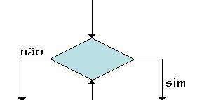

exige a saída de dois conectores para as selecções
onde a expressão é verdadeira ou falsa,
permite ainda a entrada de dois conectores para a
criação de ciclos.
|
Decisao |
|
 |
Esta forma não tem uma Linguagem Algorítmica predefinida,
no entanto estas formas ao serem usadas de determinada maneira permitem
criar vários tipos de condições onde estas já tem uma Linguagem Algorítmica.
As várias utilizações destas formas são apresentadas aqui.